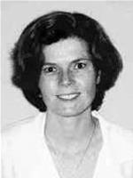

Our Care & Services
Family Medicine
Carolina Health Specialists offers two convenient locations to assist you. All three offices offer a wide spectrum of family medicine care including laboratory services, and pulmonary testings.
Sheree' D. Nwanegwo, MD

William E. Prenatt, MD
Eric Senn, NRCME
Sara Khalil, MD

Paige A. Weaver, PA-C
Ashley Smith Wilson, MPAS, PA-C
Erica Domogauer, PA-C
Shannon R. Hussey, MSN, FNP-C
Rheumatology
Carolina Health Specialists has a dedicated practice that offers a full spectrum of Rheumatology care including management of joint disorders, connective tissue disease, and bone density testing.
Rabih Nayfe, MD
Gerald LaRochelle, MD
David Lazar, MD
Corey Heichel, PA-C
Pulmonology
Carolina Health Specialists has dedicated a practice that offers a full spectrum of pulmonary care including Pulmonary Function Testing/Pulse Oximeter. We also specialize in COPD/Emphysema/Asthma.
Alan Cohen, DO, FCCP
Gregory L. Becker, MD
Richard F. Duff III, MD

Adam W. Bostick, MD, Maj, USAF, MC
Endocrinology
Carolina Health Specialist has dedicated a practice that specializes in endocrinology and metabolism disorders, including diabetes, osteoporosis, disorders of bone and calcium metabolism and disorders of the pituitary, thyroid, parathyroid and adrenal glands.
Anne LaRochelle, MD
Jocelyn Myers, MD
Taylor Currall, PA-C
Nephrology
Carolina Health Specialists has dedicated a practice that offers a full spectrum of Clinical Nephrology care including Dialysis, Renal transplantation, Polycystic Kidney Disease, Hypertension, Mellitus, and Diabetes.
Imran Ahmad Jawaid, MD
Debby DeSalvo, DO
Karandeep Shergill, MD
Interventional Pain Management
Carolina Health Specialists offers interventional pain management at our Socastee Primary Care location. This specialty is dedicated to a wide variety of pain management related but not limited to arthritis pain, cancer pain, fibromyalgia, headaches and migraines, hip, knee, low back pain, sciatica, shingles, post-trauma related pain, and sports injuries. Common procedures available include carpal tunnel injections, epidural steroid injections, occipital nerve blocks, radio frequency ablation, spinal cord stimulator trials and implants, trigeminal nerve blocks, and trigger point injections.
Scott Mayhew, MD
BY REFERRAL ONLY
Internal Medicine
Carolina Health Specialists currently offers an Internal Medicine practitioner located at our Little River and 82nd Parkway offices.
Saba Salahuddin, MD
Catherine Poston, PA-C
Cardiology
Staffed by cardiovascular care specialists with more than 40 years of combined experience, we offer our patients innovative care and specialize in cardiovascular diseases and disorders.
Neil W. Trask III, MD, FACC, FACP

Vaishali M. Swami, MD, FACC

Sanford J. Hardin II, MHS, PA-C
Clinical Research
Carolina Health Specialists has a full time, multi-specialty research department that conducts Phase II, III, and IV trials. We are dedicated to providing patients the opportunity to participate in clinical trials, many of which offer new medications to treat a variety of conditions such as Rheumatoid Arthritis and Diabetes. We are committed to providing up to date and promising new treatments for patients.
Lab Services
Carolina Health Specialists Laboratory is a COLA accredited Clinical Laboratory Improvement Amendments (CLIA) certified Physician Office Laboratory. The main laboratory is located in the Socastee Primary Care Center. Additional collection sites are located at the Little River Office in Little River, SC and at our 82nd Parkway office located in Myrtle Beach, SC. Carolina Health Specialists Laboratory testing menu and on-site services are designed around the needs of the physicians and patients in the outpatient offices.
Sleep Medicine
Carolina Health Specialists offers Sleep Medicine services at our Pulmonary Care Center. Our physicians specialize in the study, diagnosis, and therapy of sleep disorders and disturbances.
Critical Care Medicine
Carolina Health Specialists currently provides care to patients being hospitalized in the ICU.